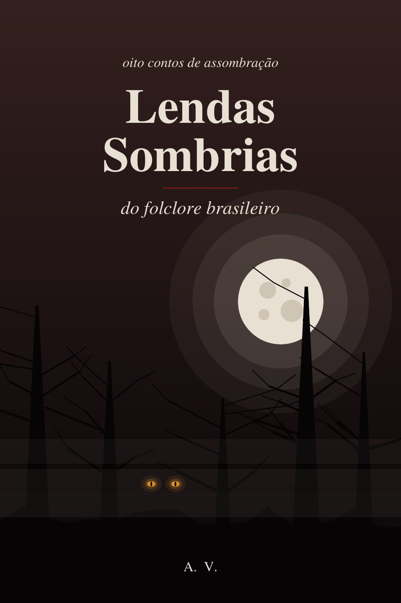

Lendas Sombrias do Folclore Brasileiro oito contos de assombração, por A. V.
O Curupira, a Mula sem Cabeça, a Iara e outras cinco lendas do Brasil, contadas de novo para dar medo outra vez. Para ler à noite, no celular, com a janela bem fechada.

Oito lendas, oito noites
Cada conto parte de uma lenda que você já ouviu falar e a leva para um lugar que ninguém contou. Abra uma para ver do que ela trata, sem estragar o susto.
O Curupira
Um caçador, uma sexta-feira e pegadas que levam para o lugar errado.
Protetor das matas, de origem tupi.
A Mula sem Cabeça
Na rua da igreja velha, quinta-feira é dia de trancar a janela. Um menino resolve esperar no degrau.
Lenda de origem ibérica, galopando pelas noites de quinta para sexta.
A Pisadeira
Uma rede, uma barriga cheia e algo muito comprido sentado na viga do telhado.
A velha explicação popular para o peso no peito de quem dorme.
A Iara
Uma voz sobre o rio, ao entardecer, e um conselho do pai que o filho não quis seguir.
A senhora das águas da Amazônia.
O Boitatá
Um coronel manda queimar a mata. O fogo tem outra ideia.
A cobra de fogo que guarda os campos e as florestas.
O Mapinguari
Um cheiro que anda pelo seringal e um grito que deixa as pernas moles.
O gigante de um olho só das histórias de seringueiros.
A Cuca
Uma madrugada de chuva, um bebê que não dorme e uma promessa muito antiga.
A velha das cantigas de ninar.
A Loira do Banheiro
Um desafio no recreio, um espelho rachado e uma foto de turma com uma criança a mais.
A lenda urbana que passa de aluno em aluno.
Para sentir o clima
Benedito sabia que sexta-feira, na mata, não era dia de caçar. Sabia também que a dívida com o armazém não esperava sexta-feira nenhuma. Do conto “O Curupira”
O que você recebe
- Um ebook em PDF com 24 páginas e oito contos originais, escritos para esta edição.
- Formato 6 x 9 polegadas, pensado para ler no celular e no tablet sem precisar dar zoom.
- Uma nota ao fim de cada conto contando de onde vem a lenda, para você saber o que é tradição e o que é invenção.
- Acesso imediato depois da confirmação do pagamento, pela Kiwify.
Perguntas frequentes
Como recebo o ebook?
Depois que o pagamento for confirmado, a Kiwify envia o acesso ao arquivo para o e-mail usado na compra.
Funciona no celular?
Sim. O PDF abre em qualquer leitor de PDF, e as páginas têm o tamanho de um livro de bolso, o que deixa a leitura confortável na tela pequena.
É terror pesado?
É terror de arrepio e suspense, sem cenas gráficas. Mesmo assim, não é recomendado para crianças pequenas.
As histórias são originais?
Sim. As lendas pertencem ao folclore, mas todos os contos foram escritos do zero para este livro.
Feche a janela. Comece pela primeira lenda.
Oito contos, uma noite escura e um assobio que ninguém deve responder.